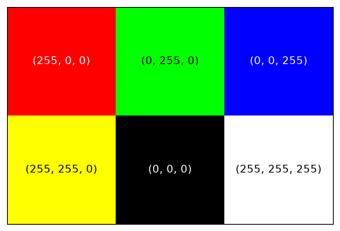
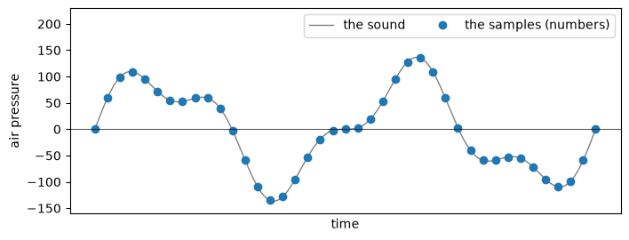

7b. Additions: How a Computer Stores Data#
Additions to Chapter 7: Iteration and Search:
how a computer stores text, pictures and sound as numbers, and what a text file is. Chapter 7 reads the
text file words.txt; this page explains what is in such a file. Read this page after the chapter.
The practice questions at the end have answers: try each question first, then open its Answer.
Run the setup cell below first. In Colab, it downloads the file words.txt (the word list that
Chapter 7 uses), and thinkpython.py, which lets this page show the errors of some examples without
stopping the page.
from os.path import basename, exists
def download(url):
filename = basename(url)
if not exists(filename):
from urllib.request import urlretrieve
local, _ = urlretrieve(url, filename)
print("Downloaded " + str(local))
return filename
download('https://github.com/AllenDowney/ThinkPython/raw/v3/thinkpython.py');
download('https://raw.githubusercontent.com/AllenDowney/ThinkPython/v3/words.txt');
import thinkpython
All data is stored as numbers#
At the lowest level, a computer stores only numbers. Its memory and its disk hold numbers, and nothing else. Every kind of data is stored as numbers:
text: each character is a number (the sections “Binary numbers” and “Text: characters as numbers”);
pictures: each small dot of the picture is three numbers (the section “Pictures: pixels and RGB colors”);
sound: the loudness of the sound, measured many times each second, is a sequence of numbers (the section “Sound”);
video: a sequence of pictures, and the sound;
programs: the instructions of a program are numbers too.
A program gives the numbers their meaning. The same numbers can be letters in one program and colors in
another. For example, in a text file the number 65 is the letter A, and in a picture it can be the brightness of
the red part of the color of a dot.
The computer stores each number as a binary number: a number that has only the digits 0 and 1. The hardware of a computer can store and change two states very fast. For example, a part of a memory chip holds an electric charge or no charge, and a spot on a hard disk is magnetized in one direction or the other. One state is 0 and the other state is 1.
A bit (from binary digit) is one 0 or 1.
A byte is 8 bits, for example
01000001. Sizes of files and memory are given in bytes: a kilobyte (KB) is about one thousand bytes, a megabyte (MB) about one million, and a gigabyte (GB) about one billion.
Binary numbers#
Decimal numbers. The numbers that people use every day are decimal numbers: they have the 10 digits 0 to 9. Each position of a digit has a place value. From the right, the place values are 1, 10, 100, 1000, and so on: each place value is 10 times the place value at its right. The number 4072 means:
Place value |
1000 |
100 |
10 |
1 |
|---|---|---|---|---|
Digit |
4 |
0 |
7 |
2 |
4072 = 4×1000 + 0×100 + 7×10 + 2×1.
Binary numbers. A binary number has only the 2 digits 0 and 1. From the right, its place values are 1, 2, 4, 8, 16, 32, 64, 128, and so on: each place value is 2 times the place value at its right.
Convert a binary number to a decimal number. Write the place value above each digit. Then add the place
values of the digits that are 1, and ignore the digits that are 0. For example, the binary number 1011:
Place value |
8 |
4 |
2 |
1 |
|---|---|---|---|---|
Digit |
1 |
0 |
1 |
1 |
1011 = 8 + 2 + 1 = 11.
Another example, the byte 01000001:
Place value |
128 |
64 |
32 |
16 |
8 |
4 |
2 |
1 |
|---|---|---|---|---|---|---|---|---|
Digit |
0 |
1 |
0 |
0 |
0 |
0 |
0 |
1 |
01000001 = 64 + 1 = 65. Zeros at the left do not change the value, the same as in a decimal number
(0042 is 42).
The largest number in one byte is 11111111 = 128 + 64 + 32 + 16 + 8 + 4 + 2 + 1 = 255. So one byte
holds a number from 0 to 255: 256 different values.
Convert in Python. int(TEXT, 2) converts a string of binary digits to a number. The second argument, 2,
tells int that the digits are binary digits. (int(TEXT) without a second argument reads decimal digits.)
int('1011', 2)
11
int('01000001', 2)
65
int('11111111', 2)
255
A binary number can have only the digits 0 and 1. With any other digit, int raises a ValueError:
int('1021', 2)
ValueError: invalid literal for int() with base 2: '1021'
Text: characters as numbers#
A computer stores each character of a text as a number. A character encoding is a table that gives the number of each character. A program that stores text uses the table to change each character into its number. A program that shows text uses the table to change each number back into its character.
ASCII#
ASCII (American Standard Code for Information Interchange, from 1963) is the oldest character encoding that is still in use. It gives numbers to 128 characters, with the numbers 0 to 127:
Characters |
Numbers |
|---|---|
the uppercase letters |
65 to 90 ( |
the lowercase letters |
97 to 122 ( |
the digits |
48 to 57 ( |
the space |
32 |
punctuation and symbols, such as |
numbers between 33 and 126 |
control characters, such as the newline |
0 to 31, and 127 |
The control characters are not shown as symbols. They tell a program what to do: for example, the newline character tells a program that shows the text to start a new line.
The ASCII characters are only the characters of English: the table has no é, no ñ, no Hebrew or Chinese
letters, and no emoji.
ord and chr#
The built-in function ord(CHARACTER) returns the number of a character. For the ASCII characters, this is
the ASCII number:
ord('A')
65
ord('a')
97
The built-in function chr(NUMBER) does the opposite: it returns the character of a number.
chr(66)
'B'
This loop shows the number of each character of a string. The space and the ! are characters too, so
they have numbers:
for letter in 'Hi there!':
print(letter, ord(letter))
H 72
i 105
32
t 116
h 104
e 101
r 114
e 101
! 33
The digit characters are not their values. The character '7' is stored as the number 55, not as the
number 7. int converts the text '7' to the number 7:
print(ord('7'))
print(int('7'))
55
7
ord takes one character. With a string of two or more characters, ord raises a TypeError:
ord('Hi')
TypeError: ord() expected a character, but string of length 2 found
From bits to characters. In the computer, the text Hi is the two bytes 01001000 and 01101001. To
read the text, convert each byte to a number, then find the character of the number:
print(int('01001000', 2), chr(int('01001000', 2)))
print(int('01101001', 2), chr(int('01101001', 2)))
72 H
105 i
Other encodings: Unicode and UTF-8#
ASCII is not the only character encoding. Other encodings give numbers to other characters, and different encodings can give different numbers to the same character. Some examples:
Unicode is a standard that gives a number to almost every character of every written language, and to emoji: more than 150,000 characters. Python strings are Unicode strings:
'café','שלום'and'😀'are all strings.UTF-8 is the most common way to store Unicode text in a file or send it on the internet. Most web pages, and most text files made today, are UTF-8. UTF-8 uses the same numbers as ASCII for the 128 ASCII characters, so a file that has only ASCII characters is also a UTF-8 file. For all the other characters, such as
é, UTF-8 uses different numbers, and it stores many characters in two, three or four bytes, not in one.UTF-16 is another way to store Unicode. It stores each character, also
A, in two or four bytes, so even an English text is stored with different bytes than in ASCII.Older encodings, such as Latin-1 (for Western European languages), Windows-1252, and Shift JIS (for Japanese), give their own numbers to the characters of one language or group of languages.
A file does not say which encoding it uses. A program that reads a text file must use the same encoding as
the program that wrote it. If it uses another encoding, it shows the wrong characters. For example, a UTF-8
file that has the word café can be shown as café by a program that reads it as Windows-1252: the bytes of
é in UTF-8 are the numbers of two other characters in Windows-1252.
Diving deeper: give the encoding to open
open uses a default encoding to change the numbers of a file into characters. On a Mac, on Linux and in
Colab, the default is UTF-8. On Windows, the default can be another encoding (for example Windows-1252), so a
UTF-8 file with characters such as é can show the wrong characters, or open can raise a
UnicodeDecodeError. To read a UTF-8 file in the same way on every computer, give the encoding to open:
for line in open('words.txt', encoding='utf-8'):
print(line.strip())
encoding='utf-8' is a keyword argument, as end=' ' in print(letter, end=' ').
Text files and binary files#
Every file on a disk is a sequence of bytes: numbers from 0 to 255. Files are of two kinds, by what these numbers mean.
A plain text file (also called a text file, or a flat file) is a file whose bytes are only the numbers of characters, in one character encoding: letters, digits, punctuation, spaces, tabs and newlines. Each line of the text ends with a newline character. (Many files made on Windows end each line with two characters: a carriage return and a newline.) A text file has no fonts, no bold text, no pictures: only characters.
Any text editor shows the characters of a text file: Notepad (Windows), TextEdit (Mac), VS Code.
Examples:
.txtfiles, Python programs (.py), CSV files (.csv), web pages (.html).words.txtis a text file, with one word on each line (the end of this section shows its bytes).People use the name flat file most for a text file that holds data, one record on each line, for example one word on each line (
words.txt) or one row of a table on each line (a CSV file).
A binary file is any other file. Its bytes are numbers that are not characters: the numbers of the pixels of a picture, of the samples of a sound, or of a format that only one kind of program can read.
Examples: pictures (
.jpg,.png), sound (.mp3,.wav), video (.mp4), Word documents (.docx), Excel files (.xlsx), PDF files (.pdf), programs (.exe), zip files (.zip).A text editor shows a binary file as random symbols, because it changes each number into a character, and the numbers are not characters. To use a binary file, you need a program that knows its format: a photo viewer, a music player, Word.
A Word document is not a text file, though it holds text: it also holds the fonts, the layout and the pictures, in a binary format.
See the numbers in a file. In Python, open(PATH, 'rb') opens a file in binary mode ('rb': read
binary). Then the method read(N) returns the first N bytes of the file, and a for loop on them gives
each byte as a number. These are the first 9 bytes of words.txt:
file_object = open('words.txt', 'rb')
for number in file_object.read(9):
print(number, chr(number))
97 a
97 a
13
10
97 a
97 a
104 h
13
10
The first lines of words.txt are aa and aah. The bytes are the ASCII numbers of their characters: 97 is
a and 104 is h. Each line ends with two control characters, 13 (the carriage return \r) and 10 (the
newline \n), because the file was made in the Windows way. These two characters are not shown as symbols:
print shows an empty line for the newline. Without 'rb', open changes the numbers into characters for
you, and it changes each carriage return and newline at the end of a line into one \n. That is why
readline in Chapter 7 returns 'aa\n'.
Pictures: pixels and RGB colors#
Pixels. A picture on a screen is a grid of very small squares of color, called pixels (from picture element). Each pixel has one color. The pixels are so small that you do not see them one by one: you see the picture. For example:
a computer screen of 1920 × 1080 pixels has 1920 columns and 1080 rows of pixels: 2,073,600 pixels;
a photo of 12 megapixels (from a phone camera) has about 12 million pixels.
RGB colors. A screen makes the color of each pixel with three small lights: a red one, a green one and a blue one. So the computer stores the color of a pixel as three numbers: how bright the red light is, how bright the green light is, and how bright the blue light is. Each number is from 0 (off) to 255 (as bright as possible): one byte. These three numbers are the RGB value of the color.
RGB value |
Color |
|---|---|
(255, 0, 0) |
red |
(0, 255, 0) |
green |
(0, 0, 255) |
blue |
(255, 255, 0) |
yellow (red and green light together) |
(0, 0, 0) |
black (all three lights off) |
(255, 255, 255) |
white (all three lights as bright as possible) |
(128, 128, 128) |
gray |
Each of the three numbers has 256 values, so there are 256 × 256 × 256 different colors:
256 * 256 * 256
16777216
A picture is a sequence of numbers. The computer stores a picture as the RGB values of its pixels, row by row: three numbers for the first pixel of the first row, then three numbers for the next pixel, and so on. This very small picture has 2 rows of 3 pixels: 6 pixels, so 18 numbers. Each pixel shows its RGB value:

The numbers of this picture, row by row, are:
255 0 0 0 255 0 0 0 255 255 255 0 0 0 0 255 255 255
and the computer stores each of these numbers as a byte, in binary: 255 is 11111111, and 0 is 00000000.
A picture with more pixels has more numbers. A photo of 12 million pixels has 36 million numbers (3 for each
pixel): 36 million bytes, about 36 MB. Picture files such as .jpg and .png use less space: they
compress the numbers, that is, they store them in a shorter form. A program that shows the picture changes
the file back into the three numbers of each pixel.
Sound#
A sound is a fast vibration of the air: the air pressure goes up and down very quickly. A microphone changes the air pressure into an electric signal. To store the sound, the computer measures this signal many times each second, and stores each measurement as a number. Each measurement is a sample. The picture shows a short part of a sound: the line is the sound, and each dot is one sample.

The first samples: [0, 59, 99, 109, 95, 72, 55, 53, 59, 59]
So a sound is stored as a long sequence of numbers. For example, the sound on a music CD has 44,100 samples
each second for each of the two speakers (left and right), and each sample is a number from -32768 to 32767
(two bytes). To play the sound, the computer sends the numbers to the speaker, and the speaker moves the air
in the same way. Sound files such as .mp3 compress the numbers, as .jpg files compress pictures.
Summary#
A computer stores all data as numbers, and it stores each number as a binary number: a sequence of bits (0 or 1). A byte is 8 bits, a number from 0 to 255.
To convert a binary number to decimal, add the place values (1, 2, 4, 8, 16, …) of the digits that are
In Python:
int(TEXT, 2).
Text: a character encoding gives a number to each character. ASCII gives the numbers 0 to 127 to the characters of English. Other encodings (Unicode with UTF-8 or UTF-16, Latin-1, …) give numbers to more characters, and can use different numbers.
ordandchrchange a character to its number and back.A plain text file holds only the numbers of characters; any text editor shows it. A binary file holds other numbers (pictures, sound, documents, programs), and needs a program that knows its format.
Pictures: a grid of pixels, with three numbers (red, green, blue: each 0 to 255) for each pixel.
Sound: samples of the sound, many each second, each a number.
Practice questions#
Question 1 (very easy): binary to decimal#
Convert the binary number 1101 to a decimal number, by hand.
Answer
Place value |
8 |
4 |
2 |
1 |
|---|---|---|---|---|
Digit |
1 |
1 |
0 |
1 |
1101 = 8 + 4 + 1 = 13. To check in Python: int('1101', 2) returns 13.
Question 2 (easy): a byte of text#
A text file in ASCII has the byte 01100010. Convert it to a decimal number by hand. Which character is it?
Use the ASCII table on this page.
Answer
Place value |
128 |
64 |
32 |
16 |
8 |
4 |
2 |
1 |
|---|---|---|---|---|---|---|---|---|
Digit |
0 |
1 |
1 |
0 |
0 |
0 |
1 |
0 |
01100010 = 64 + 32 + 2 = 98. The lowercase letters start at 97 (a), so 98 is b. To check in
Python: chr(int('01100010', 2)) returns 'b'.
Question 3 (easy): what is displayed?#
Predict what this code displays. Then run the cell to check (on the website, click Show code cell output).
for ch in 'Cab':
print(ord(ch))
Answer
67
97
98
The uppercase C is 65 + 2 = 67 (A is 65, B is 66). The lowercase a is 97 and b is 98. An uppercase
letter and its lowercase letter have different numbers.
Question 4 (easy): text file or binary file?#
Which of these files are plain text files, and which are binary files?
notes.txt, vacation.jpg, hello.py, song.mp3, grades.csv, essay.docx
Answer
Text files:
notes.txt,hello.py(a Python program is text) andgrades.csv(a CSV file is text, one row of the table on each line). A text editor shows their characters.Binary files:
vacation.jpg(a picture),song.mp3(sound) andessay.docx(a Word document: it holds text, but also fonts and layout, in a binary format).
Question 5 (medium): what is displayed?#
Predict what this code displays. Then run the cell to check (on the website, click Show code cell output).
print(ord('7'), int('7'))
print(chr(ord('A') + 25))
Answer
55 7
Z
The character '7' is stored as the number 55 (the digits 0 to 9 are 48 to 57), and int('7') converts
the text to the number 7. In the second line, ord('A') + 25 is 65 + 25 = 90, and chr(90) is 'Z': the
letters have numbers in alphabetical order.
Question 6 (medium): pixels#
Which color has the RGB value (0, 0, 0)? Which color has the RGB value (255, 255, 255)?
A picture has 100 columns and 50 rows of pixels. The computer stores it without compression, with one byte for each number. How many bytes does the picture use?
Answer
(0, 0, 0) is black: all three lights are off. (255, 255, 255) is white: all three lights are as bright as possible.
The picture has 100 × 50 = 5,000 pixels. Each pixel has 3 numbers (red, green, blue), and each number is one byte: 5,000 × 3 = 15,000 bytes.
Question 7 (medium): wrong characters#
Alice saves a text file with the word café in UTF-8. Bob opens the file on his computer, and his program
shows café. The letters c, a and f are correct. Why is the é wrong, and why are the other letters
correct?
Answer
Bob’s program reads the file with a different character encoding than the one that Alice’s program used to
write it (for example Windows-1252, not UTF-8). The two encodings give different numbers to é, so Bob’s
program changes the bytes of é into other characters. The letters c, a and f are ASCII characters,
and both encodings use the ASCII numbers for them, so they are correct. To fix the problem, Bob must open the
file as UTF-8 (in Python: open(PATH, encoding='utf-8')).
Question 8 (hard): write a function#
Write a function called is_ascii that takes a string and returns True if every character of the string is
an ASCII character (its number is less than 128), and False otherwise. For example, is_ascii('hello')
returns True, and is_ascii('café') returns False. An empty string has no characters that are not ASCII,
so is_ascii('') returns True.
Start from this header (replace ... with the body):
def is_ascii(text):
...
Answer
def is_ascii(text):
for letter in text:
if ord(letter) >= 128:
return False
return True
The loop checks each character. When it finds a character that is not ASCII, the function returns False
at once: one such character is enough. If the loop ends, no character was larger than 127, so the function
returns True. This is the same form as uses_any in Chapter 7, with True and False the other way around. For an
empty string, the loop runs zero
times, and the function returns True.
Question 9 (hard): write a function#
Write a function called binary_to_decimal that takes a string of binary digits and returns its value as a
number. Do not use int(TEXT, 2): use a for loop. For example, binary_to_decimal('1011') returns 11,
binary_to_decimal('01000001') returns 65, and binary_to_decimal('11111111') returns 255.
Hint: start with the total 0, and go through the digits from the left. For each digit, multiply the total by 2, then add the digit (0 or 1). Multiplying by 2 moves the digits that you read before one place to the left, as multiplying by 10 does with decimal digits (42 × 10 = 420).
Start from this header (replace ... with the body):
def binary_to_decimal(text):
...
Answer
def binary_to_decimal(text):
total = 0
for digit in text:
total = total * 2 + int(digit)
return total
For '1011': 0×2 + 1 = 1, then 1×2 + 0 = 2, then 2×2 + 1 = 5, then 5×2 + 1 = 11.
Another solution uses the place values, as the section “Binary numbers” does. It goes through the digits from
the right with reversed (the page “7c. Additions: File Paths and for Loops” explains it), and it adds the
place value of each digit that is '1'. The place value starts at 1, and doubles for each digit:
def binary_to_decimal(text):
total = 0
place_value = 1
for digit in reversed(text):
if digit == '1':
total += place_value
place_value *= 2
return total
For '1011', the loop sees the digits 1, 1, 0, 1 (from the right), with the place values 1, 2, 4, 8:
1 + 2 + 8 = 11.
Credits#
Additions by Prof. Y. Rosenthal, for Think Python: 3rd Edition by Allen B. Downey. Text license: Creative Commons Attribution-NonCommercial-ShareAlike 4.0 International